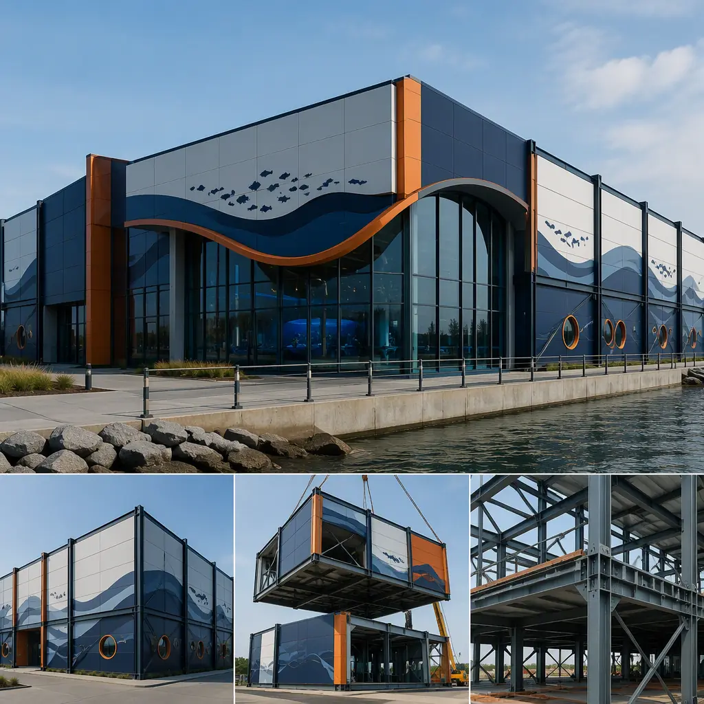
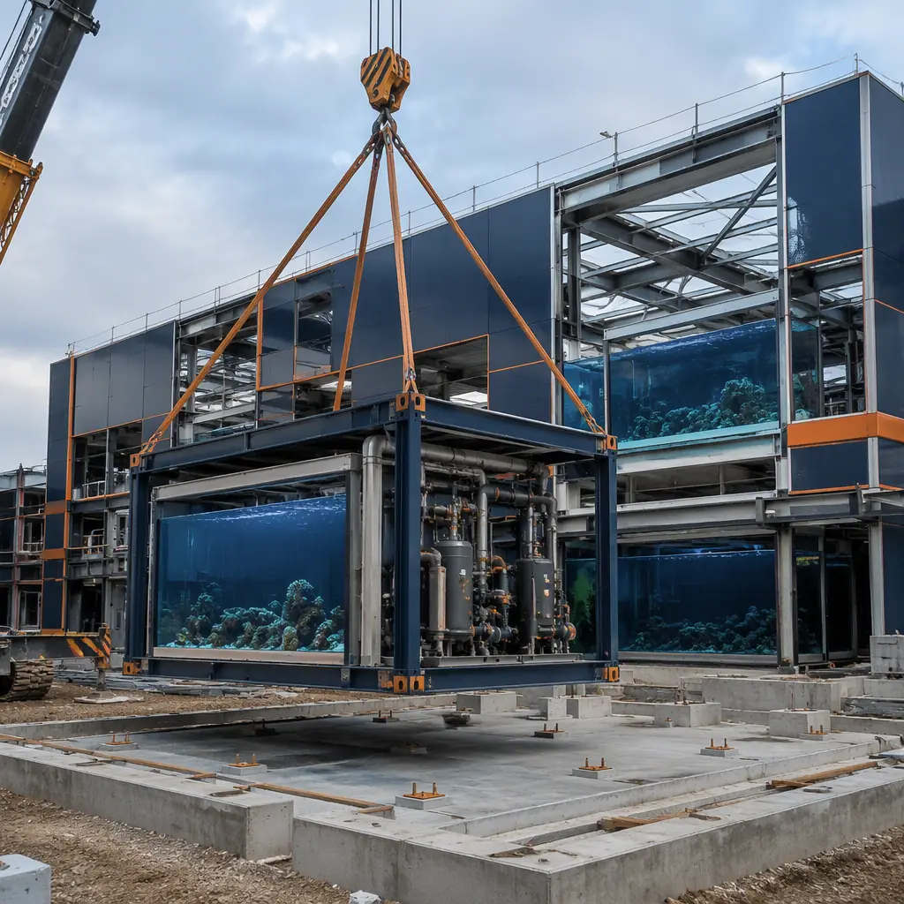
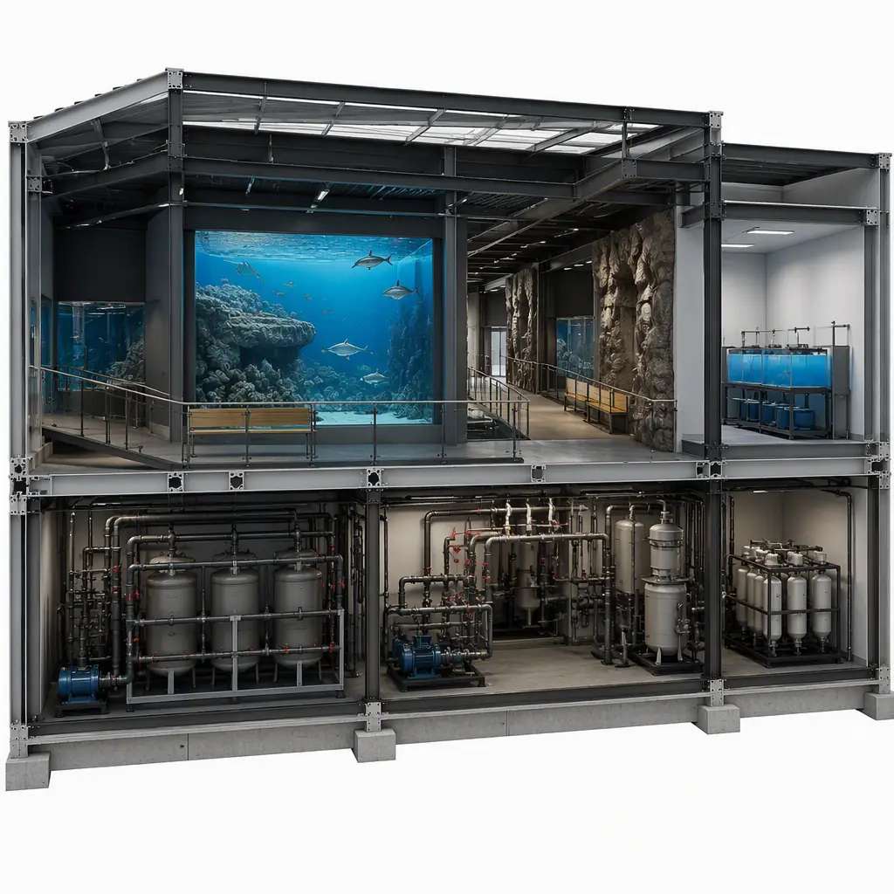
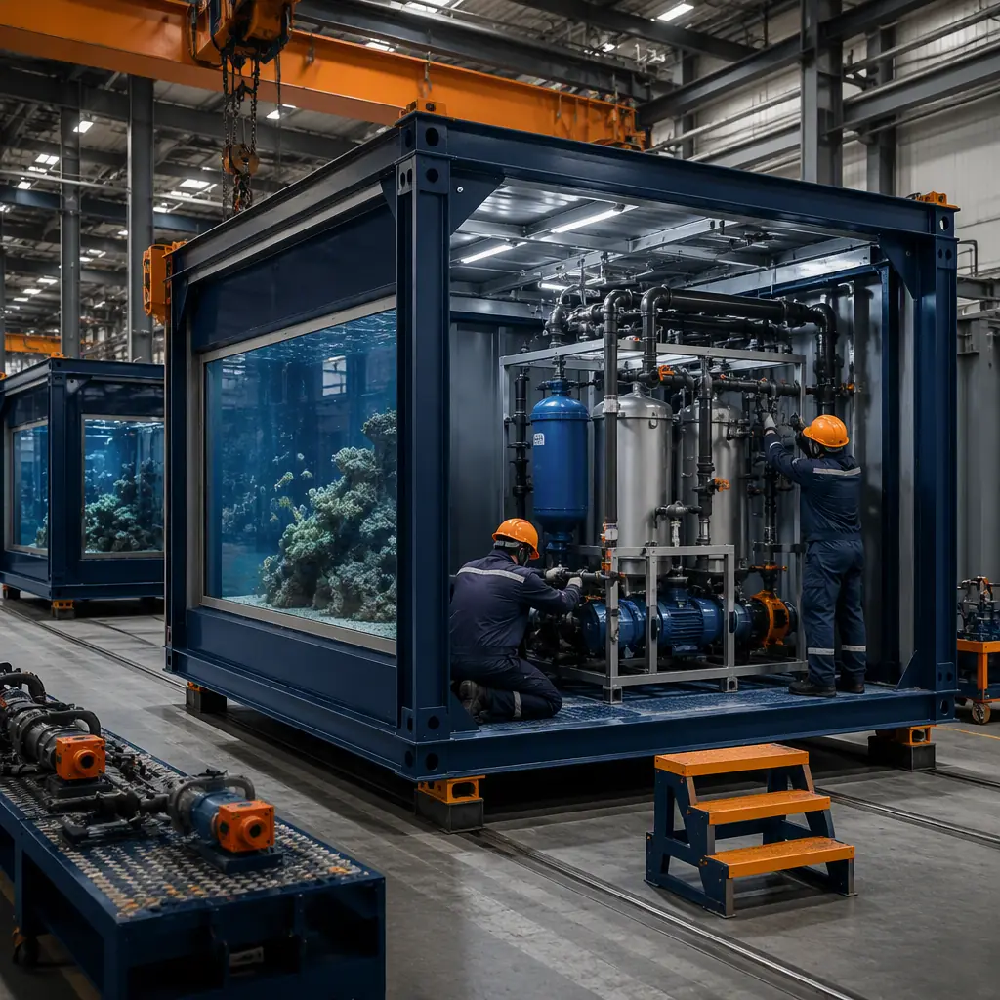

Public aquariums are among the most mechanically demanding buildings in commercial construction. A mid-size aquarium of 60,000–100,000 sq ft typically carries 1–2 million gallons of exhibit water, life-support systems (LSS) that filter, circulate and temperature-control that water continuously, humidity loads that would rot a conventional structure from the inside, and a visitor experience that must open on schedule because ticket revenue starts the day the doors do. Conventionally, an aquarium takes 24–36 months to deliver: massive cast-in-place concrete tank structures, complex mechanical rooms built in place, and exhibit fit-out sequenced behind both. Modular prefabricated construction restructures the program — factory-built steel-frame modules house the mechanical cores, quarantine and holding facilities, ticketing and guest services, education spaces, and even prefabricated tank shells — compressing the building program to 12–18 months with a 15–25% building cost reduction. The approach extends the factory-built logic we document for modular museum and cultural building construction to the wet, mechanical-heavy aquarium program. This guide covers the module package, life-support engineering, cost structure, and procurement path for public aquariums and marine parks considering prefabricated delivery.

Why Aquarium Construction Is a Mechanical Problem First
The aquarium is a building wrapped around a life-support plant, and that changes every construction decision:
- Life-support systems dominate the critical path. The LSS plant — pumps, sand and biological filters, UV sterilizers, ozone generators, heat exchangers, and the piping that connects them to every tank — is the longest-lead mechanical scope in any building type. In conventional delivery, LSS is installed in place over 8–14 months after the building shell is complete. Modular delivery builds the LSS as factory modules — skid-mounted pump and filter systems, pre-piped and pre-commissioned in the plant — the same skid-and-module logic we detail for modular water and wastewater treatment facilities.
- Humidity is a structural enemy. Aquarium halls run 60–80% relative humidity, and condensation on structure is a leading cause of corrosion and mold in aquarium buildings. Steel-frame modules are built with marine-grade coatings, vapor barriers, and humidity-rated insulation in the factory — the same envelope discipline we document for modular building envelope systems.
- Heavy water loads shape the structure. A 500,000-gallon exhibit tank imposes live loads of 4,000+ psf on its support structure — 10–20 times a typical office floor load. Modular steel framing handles concentrated tank loads with factory-computed member sizing, and tank shells can themselves be prefabricated as steel or fiberglass modules, cast off site, and craned into place.
- Live animals impose a hard deadline. Animals in quarantine and holding have a finite holding window; if the exhibit building slips, the collection is jeopardized. The parallel factory schedule compresses the building critical path so the holding and quarantine modules — the first priority for any aquarium program — are ready before animals arrive.


The Modular Aquarium Module Package
A modular aquarium divides into functional building blocks that can be manufactured, tested and shipped independently, then combined on site:
Life-Support & Mechanical Cores
The LSS room is delivered as factory-built skid modules — filter vessels, pumps, UV/ozone systems, heat exchangers and control panels pre-piped on steel skids, pressure-tested at the factory, and craned into a weather-tight mechanical core. This removes the longest mechanical trade from the site critical path entirely. The same skid-mounted approach we cover for modular MEP systems integration applies, scaled to aquarium-grade redundancy: N+1 pumps, dual power feeds, and automatic backup filtration. Energy reliability is a design driver at this scale — a filtration outage measured in hours can threaten an entire collection — so the mechanical core is engineered for continuous operation with generator-ready power connections and automated alarm-and-failover logic, the operational-resilience approach we document for modular data center construction, where uptime governs the business model just as it governs animal welfare here.
Quarantine, Holding & Veterinary Facilities
Quarantine and holding modules — with their own independent life-support, water treatment and isolation plumbing — are the first modules deployed, because they receive animals before the exhibit halls open. These follow the same isolated-environment logic we document for modular laboratory and research facilities, with marine-grade materials and veterinary support space built in.
Visitor, Education & Support Buildings
Ticketing and gift shop modules, education classrooms, staff offices, and food service spaces are conventional modular units with aquarium-specific fit-out — marine-themed finishes, humidity-rated HVAC, and high-traffic floor finishes. The guest-services program parallels what we cover for museum construction, and food service modules follow our modular restaurant construction guide.
Cost Structure — Modular vs. Conventional Aquarium Delivery
| Cost Category | Conventional (80,000 sq ft) | Modular (80,000 sq ft) |
|---|---|---|
| Building shell & structure | $18–28M | $14–22M (factory-built) |
| Life-support systems (LSS) | $8–14M | $6.5–11M (skid modules) |
| Tank shells & exhibits | $10–18M | $8–14M (prefabricated shells) |
| Field labor, humidity protection & schedule risk | $6–10M | $2.5–4.5M |
| Total Building Program | $42–70M | $31–51.5M |
The 20–25% building cost reduction compounds with 6–12 months of earlier ticket revenue — significant for an attraction where attendance drives municipal and institutional budgets. For the full economics of modular project delivery, see our 2026 modular cost guide and our developer's ROI analysis.
Humidity, Acoustics & Marine-Corrosion Engineering
Aquarium buildings demand engineering that most commercial buildings never touch. Humidity control requires the envelope to carry a continuous vapor barrier, and the HVAC system must manage 60–80% RH exhibit halls without condensation on structure or glazing. Acoustics matter in a different way: pump rooms and mechanical cores generate continuous low-frequency noise that must be isolated from exhibit halls, where visitors need to hear the experience — the acoustic separation strategies we document for modular acoustic performance and soundproofing apply directly. And because saltwater vapor corrodes aggressively, all steel in wet zones gets marine-grade coatings, and equipment rooms get dedicated ventilation and drainage — the corrosion-control discipline we cover for modular cold storage construction, where a hostile interior environment drives the same material choices.

Water Quality, Circulation & Commissioning
The difference between an aquarium that opens and an aquarium that thrives is the commissioning of its water systems. Modular delivery shifts commissioning from the field to the factory wherever possible: life-support skids are hydro-tested and run through their control sequences at the plant, and water-quality instrumentation — pH, salinity, dissolved oxygen, temperature, and oxidation-reduction potential sensors — is pre-wired to the building automation system. On site, the commissioning sequence still requires water treatment, biological cycling of filters, and the mandatory quarantine period for new livestock, but the building-side critical path is largely complete when the modules arrive. The testing, balancing, and handover discipline follows our modular building commissioning and handover guide, and the water-quality monitoring infrastructure connects into the smart-building platform we document for modular smart building technology.
Animal Welfare Standards & Operational Design
Aquarium design is increasingly governed by animal welfare standards that shape the building program: AZA accreditation criteria in North America require adequate quarantine capacity, life-support redundancy, and environmental enrichment space, and many institutions exceed code minimums voluntarily. Modular delivery supports accreditation-driven design because the modules are built to a fixed, documented standard in the factory — quarantine isolation, veterinary support space, and enrichment features are coordinated at module design stage rather than improvised in the field. The same standards-driven approach we document for modular veterinary clinics and animal hospitals scales to the aquarium's institutional requirements, and the humidity- and corrosion-controlled environments we describe above keep the facility operating reliably for decades.
Phased Delivery for Expansion & Renovation
Aquariums rarely build their final footprint at once. Institutions expand with new exhibit halls, add quarantine capacity, renovate aging mechanical rooms, or replace support buildings while the existing aquarium stays open to visitors. Modular delivery supports all of these as phased programs: a new exhibit wing or life-support building is factory-built while the existing facility operates, then connected during a planned shutdown window — the live-facility phasing logic we document for modular additions and expansions. For institutions working within public budgets, the financing and procurement structure for phased institutional programs is covered in our modular construction lending guide and our RFP procurement guide.
Exhibit Hall Design & the Guest Experience
The exhibit hall is where aquarium architecture earns its reputation, and modular delivery now supports the immersive environments visitors expect. Exhibit modules can carry curved glazing, acrylic viewing panels, habitat-themed wall systems, and the elevated walkways and viewing galleries that structure the visitor journey — the same large-glazing and custom-envelope capability we document for modular design flexibility. Humidity control keeps the guest experience comfortable while protecting the structure, and acoustic design isolates pump noise from the halls so visitors hear the water, not the mechanical plant — the acoustic separation approach we cover in our modular acoustic performance guide. Because the exhibit modules are factory-finished, the fit-out trade that conventionally follows structure completion is absorbed into production, and the hall arrives nearly ready for stocking.
Marine Parks & Multi-Building Campuses
Large marine parks — combining a main aquarium hall, outdoor exhibits, animal care buildings, food service, and retail — are essentially multi-building campuses, and modular delivery shines at campus scale. Each building is a separate factory program running in parallel, all landing in coordinated crane campaigns, rather than one giant site schedule where trades queue behind each other. The park can phase openings by zone — the main hall first, then outdoor exhibits, then support buildings — generating revenue from early zones while later zones complete, the phasing economics we document for modular project ROI. The campus-level coordination of power, water, and life-support utilities across buildings follows the systems integration discipline in our modular MEP guide.
Is Modular Right for Your Aquarium Project?
Modular aquarium delivery delivers the strongest value for mid-size public aquariums (30,000–150,000 sq ft) where the mechanical core is the critical path, expansions of existing aquariums where new exhibit and quarantine modules must connect to a live facility without shutting it down (the same live-facility logic we document for modular additions and expansions), marine parks with multiple support buildings around a central tank hall, and any program with a fixed opening date tied to animals, funding, or season. For flagship aquariums with signature 1M+ gallon exhibits and extreme architectural statements, a hybrid approach — modular mechanical cores, quarantine, and support buildings with conventional cast-in-place structure for the signature tank — captures most of the schedule benefit while keeping the centerpiece conventional. Government and municipal aquarium projects follow the procurement path we document for modular government and municipal buildings.